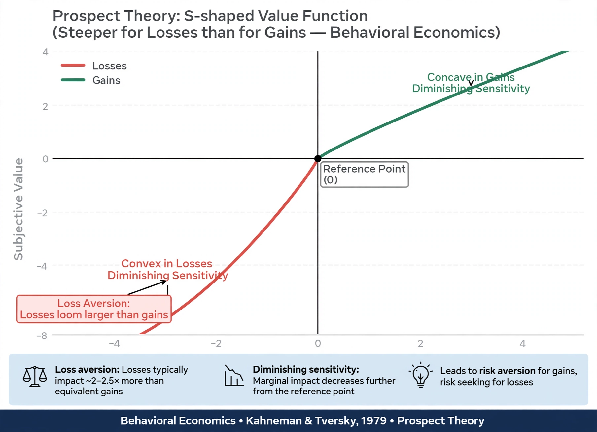

Prospect theory
From Wikipedia, the free encyclopedia

Prospect theory is a theory of decision under risk in Behavioural economics, developed by Daniel Kahneman and Amos Tversky in 1979. It describes how people actually evaluate uncertain gains and losses — relative to a reference point, with diminishing sensitivity and losses looming larger than gains — contradicting the rational-agent assumptions of expected utility theory. Kahneman received the 2002 Nobel Memorial Prize in Economic Sciences for the work (Tversky had died in 1996).
Findings
Experiments showed systematic patterns: people are risk-averse for gains but risk-seeking for losses (the reflection effect); they overweight small probabilities and underweight large ones; and they evaluate outcomes as changes from a reference point, not final states. The value function's kink at the reference point — roughly twice as steep for losses — produces loss aversion, the endowment effect and status-quo bias.
Formulation and development
The 1979 Econometrica paper proposed editing and evaluation phases and a decision-weight function π. Cumulative prospect theory (1992) refined the weighting to apply to ranked outcomes, fixing violations of stochastic dominance. Prospect theory became the most influential descriptive theory of risky choice and a foundation of behavioural finance, explaining anomalies such as the Equity premium puzzle and the disposition effect (selling winners too early, holding losers too long).
Criticism
Critics note parameter instability across contexts, question its predictions for experienced decision-makers in markets, and debate whether reference points can be specified in advance rather than fitted afterwards. Replication of some classic framing studies has been mixed, though the core loss-aversion pattern is robustly documented.